All features of build 2611-2149. Each copies your Hours data on first open, then keeps its own.
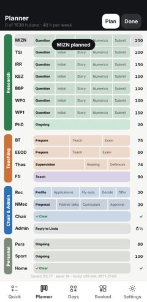
01 · InkThe original, quieter: one accent, bottom tabs, opens on Planner.Opens on Planner · tabs at the bottom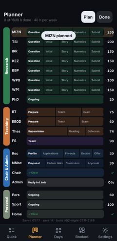
02 · NightDark for evenings. Swipe left and right to change tab.Opens on Planner · tabs at the bottom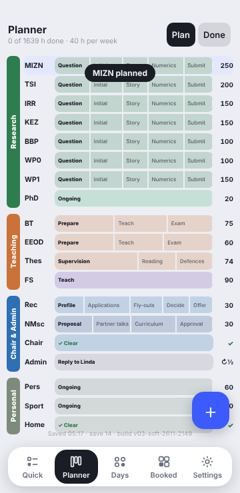
03 · SoftRounded cards and a floating tab bar; a + button adds a quick task from anywhere.Opens on Planner · floating tabs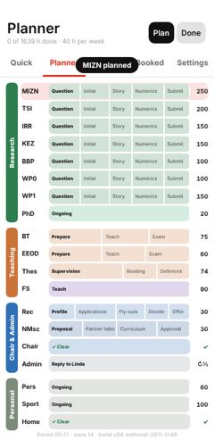
04 · EditorialSerif titles, tabs at the top, text labels only.Opens on Planner · text tabs at the top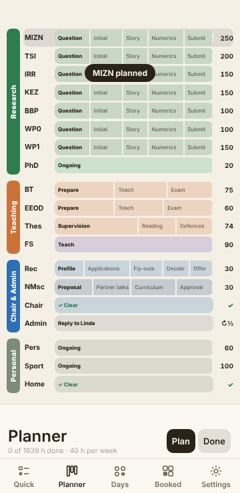
05 · PaperOne-handed: the title bar sits at the bottom, right above the tabs.Opens on Quick · tabs at the bottom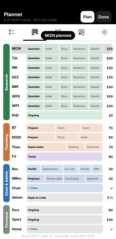
06 · MonoMonospace, black and white, icon-only tabs at the top.Opens on Planner · icon tabs at the top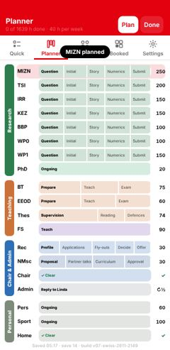
07 · SwissBold grid and red, opens on Days to log right away.Opens on Days · tabs at the top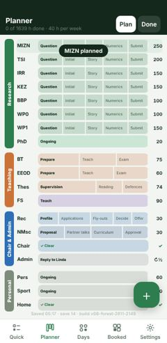
08 · ForestOpens on Quick, with a + button to capture tasks fast.Opens on Quick · tabs at the bottom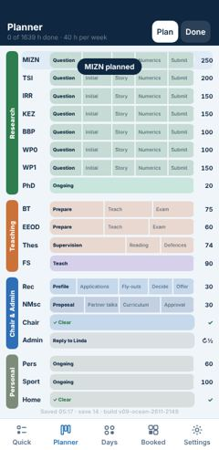
09 · OceanBlue, opens on the 12-week Booked view; swipe between tabs.Opens on Booked · tabs at the bottom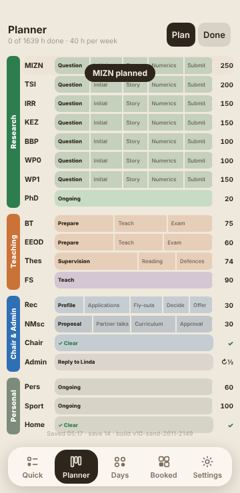
10 · SandWarm and rounded with a floating tab bar.Opens on Planner · floating tabs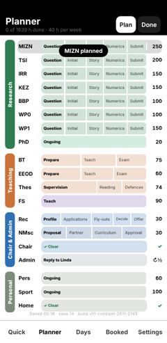
11 · ContrastLarger text and high contrast; text-only tabs.Opens on Planner · text tabs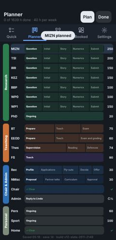
12 · SlateDark slate and compact: more rows on one screen, tabs on top.Opens on Planner · tabs at the top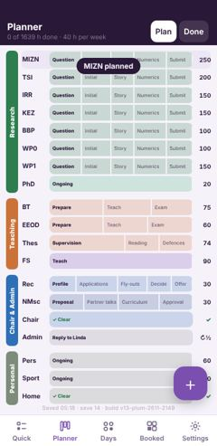
13 · PlumPurple, swipe between tabs and a + button for quick tasks.Opens on Planner · tabs at the bottom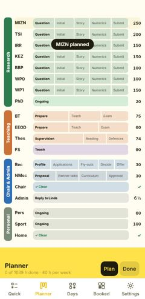
14 · CitrusBright and one-handed, opens on Quick.Opens on Quick · tabs at the bottom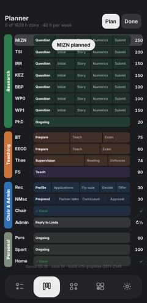
15 · GraphiteDark grey with a floating icon-only tab bar.Opens on Planner · floating icon tabs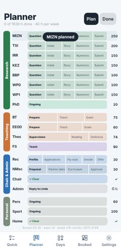
16 · NordicPale and airy, big titles, opens on Planner.Opens on Planner · tabs at the bottom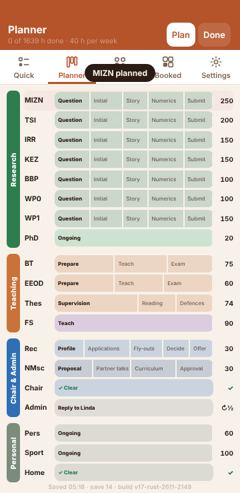
17 · RustEarthy rust and cream, tabs on top, opens on Days.Opens on Days · tabs at the top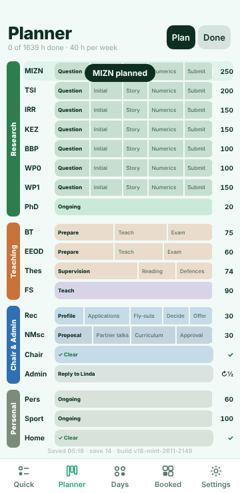
18 · MintFresh and light; swipe between tabs.Opens on Planner · tabs at the bottom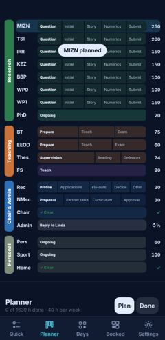
19 · MidnightNavy and cyan, one-handed for the commute.Opens on Days · tabs at the bottom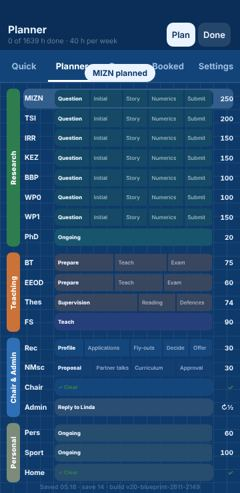
20 · BlueprintTechnical blue with a grid and monospace.Opens on Planner · text tabs at the top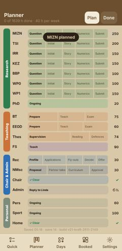
21 · KraftBrown paper and typewriter type.Opens on Planner · tabs at the bottom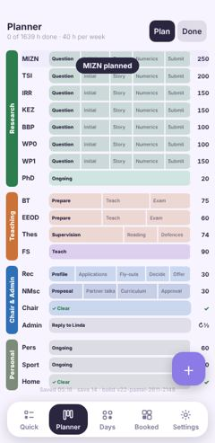
22 · PastelSoft pastels, floating tabs and a + button.Opens on Quick · floating tabs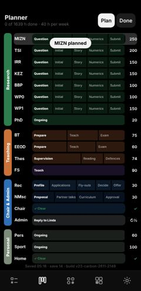
23 · CarbonPure black for OLED, icon-only tabs.Opens on Planner · icon tabs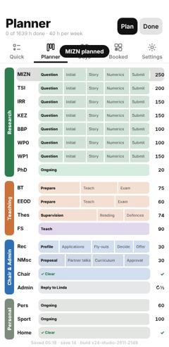
24 · StudioWhite studio: large titles, tabs on top, swipe between them.Opens on Planner · tabs at the top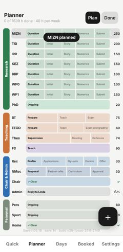
25 · FocusCalm and compact, opens on Days with a + button for quick tasks.Opens on Days · text tabs